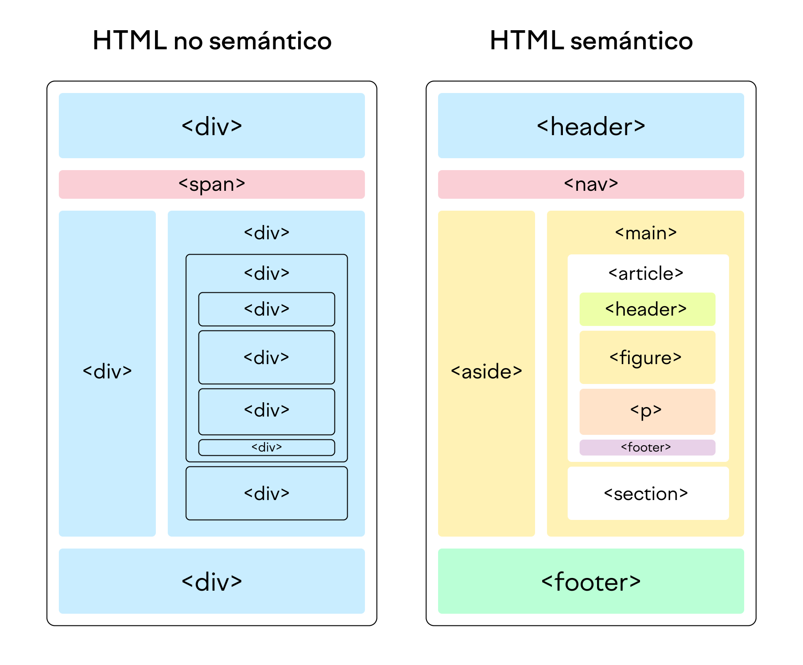

¿Qué es HTML Semantico?
El HTML semántico, también conocido como marcado semántico, engloba las etiquetas HTML que
transmiten el significado (o semántica) de su contenido.
Al añadir etiquetas HTML semánticas a tus páginas, proporcionas información adicional a los
buscadores sobre la funcionalidad e importancia de las secciones de tus páginas.
(A diferencia del HTML no semántico, que utiliza etiquetas que no transmiten directamente su
significado).

¿Qué son las Etiquetas HTML Semánticas?
Las etiquetas HTML semánticas son etiquetas que definen el significado del contenido que engloban.
Por ejemplo, etiquetas como son etiquetas HTML semánticas. Indican claramente la funcionalidad de sucontenido.
En cambio, etiquetas como <div> y <span> son ejemplos típicos de elementos
HTML no semánticos. Aunque albergan contenido, no indican qué tipo de contenido
contienen ni qué función desempeña esa pieza en la página.
¿Por Qué Son Importantes las Etiquetas HTML Semánticas?
Las etiquetas HTML semánticas no solo son más fáciles de leer y comprender por los buscadores
y desarrolladores web, sino que son más accesibles para los lectores con deficiencias
visuales y mejoran tu posicionamiento en los buscadores.
Accesibilidad
Para los usuarios que no tienen problemas de visión, es fácil identificar las distintas
secciones de una página. Las cabeceras, los pies de página y el contenido son inmediatamente
visibles.
Sin embargo, no es tan fácil para los usuarios ciegos o con dificultades de visión que
dependen de lectores de pantalla. Usar adecuadamente las etiquetas semánticas HTML les
permitirá comprender mejor tu contenido.
SEO
Las etiquetas HTML semánticas son importantes para el SEO porque indican la función del
contenido dentro de las etiquetas.
De esta forma, los rastreadores de los buscadores, como Googlebot, entenderán mejor tu
contenido, y éste tendrá más posibilidades de ser posicionado en los resultados de búsqueda
(SERP) para tus palabras clave objetivo.
En pocas palabras, las páginas que tienen implementado correctamente el HTML semántico,
tienen una ventaja competitiva en materia de SEO sobre las que no.
Tipos de Etiquetas HTML Semáticas
Las etiquetas semánticas se emplean para definir distintas secciones de una página.
Vamos a ver los elementos HTML semánticos más comunes, divididos en dos categorías en función
de su uso:
Etiquetas HTML Semánticas para Estructura
La mayor parte de las etiquetas HTML semánticas comunican el diseño de las páginas.
Estas etiquetas "estructurales" se introdujeron cuando HTML4 se actualizó a HTML5. Por eso
también se conocen comúnmente como etiquetas HTML5 semánticas o elementos HTML5 semánticos.

Lista de etiqeutas
- <header>: la etiqueta de encabezamiento define el contenido
introductorio de una página o sección.
- <nav>: la etiqueta de navegación se utiliza para los enlaces de
navegación. Puede anidarse dentro de la etiqueta <header>, pero las etiquetas
<nav> de navegación secundaria también suelen usarse en otras secciones de la
página.
- <main>: esta etiqueta contiene el contenido principal (también
llamado cuerpo) de una página. Solo debería haber una etiqueta <main> por página.
- <article>: la etiqueta artículo define el contenido independiente
de la página o web en la que se encuentra. No significa necesariamente una "entrada del
blog". Piensa en ella más bien como "una prenda de vestir": una etiqueta independiente
que puede emplearse en varios contextos.
- <section>: utilizar <section> es una forma de agrupar
contenidos que tratan sobre temas similares. Las etiquetas de sección son diferentes a
las de artículo, no son necesariamente autónomas, sino que forman parte de algo
más.
- <aside>: un elemento "aside" define el contenido de menor
importancia. Suele emplearse para las barras laterales, que incluyen información
complementaria pero no esencial.
- <footer>: usa <footer> en la parte inferior de una página.
La etiqueta suele incluir información de contacto, derechos de autor y navegación por la
web.
Etiqetas HTML Semánticas para Texto
Las etiquetas HTML semánticas para texto son etiquetas HTML que (además del formato) también
transmiten la función semántica del texto
Lista de etiquetas
- <h1> (encabezado): la etiqueta H1 marca el
encabezado de nivel superior. Normalmente, solo hay un título H1 por página.
- <h2> a <h6> (subtítulos): los subtítulos con varios niveles
de importancia. Puede haber varios subtítulos del mismo nivel en una misma página.
- <p> (párrafo): un párrafo de texto independiente.
- <a> (anchor): se utiliza para marcar un hiperenlace de una página
a otra.
- <ol> (lista ordenada): lista de elementos que se muestran en un
orden determinado, empezando por las viñetas. Las etiquetas <li> (elemento de
lista) contienen un único elemento de la lista.
- <ul> (lista desordenada): lista de elementos que no necesitan
mostrarse en un orden determinado, empezando por los números ordinales. Las etiquetas
<li> (elemento de lista) contienen un único elemento de la lista.
- <q> / <blockquote>: una cita del texto. Utiliza
<blockquote> para citas largas, de varias líneas, y <q> para citas más
cortas, en línea.
- <em> (resaltado): se usa para texto que debe destacarse.
- <strong> (énfasis): se emplea para texto que debe enfatizarse.
- <code>: indica un bloque de código.
Nota: solo hemos enumerado algunas de las etiquetas HTML semánticas más comunes. Puedes utilizar muchas otras como <summary>, <time>, <address>, <video>, etc., para facilitar la comprensión del contenido de tu web. Si quieres descubrir más elementos semánticos HTML, consulta la lista de todas las etiquetas HTML de W3Schools.